| 組み合わせ | ○× | 解説 |
|---|---|---|
| ホジキンリンパ腫→間欠熱（Pel-Ebstein熱） | ✅ | 持続的発熱・B症状が特徴 |
| 菌状息肉症→皮膚腫瘤 | ✅ | 皮膚T細胞リンパ腫→斑状→局面→腫瘤型に進行 |
| 多発性骨髄腫→紅皮症 | ❌ | 紅皮症は菌状息肉症・Sézary症候群の皮膚症状。MMは骨病変・腎障害・高Ca |
| マクログロブリン血症→網膜静脈怒張 | ✅ | 高粘稠度→網膜静脈怒張（ソーセージ様変化） |
| CLL→肝脾腫 | ✅ | CLL：汎リンパ節腫脹・肝脾腫が特徴 |
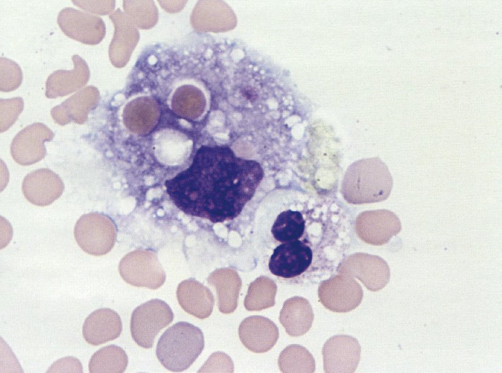
| 所見 | 炎症性 | 悪性（癌転移・リンパ腫） |
|---|---|---|
| 硬さ | 軟〜弾性硬 | 石様硬（癌転移）・弾性硬（リンパ腫） |
| 圧痛 | あり（炎症性の特徴） | なし |
| 可動性 | あり（動く） | 乏しい（周囲に癒着） |
| 皮膚 | 発赤・熱感 | なし |
| 境界 | 明瞭 | 不整 |
| 部位 | 感染源の排液領域 | 遠隔転移・全身リンパ節 |
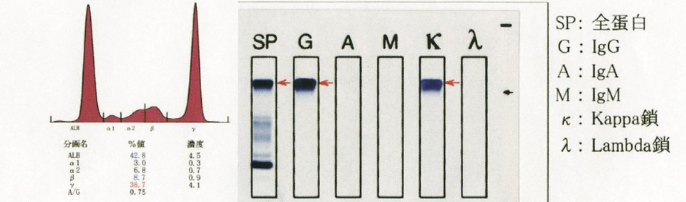
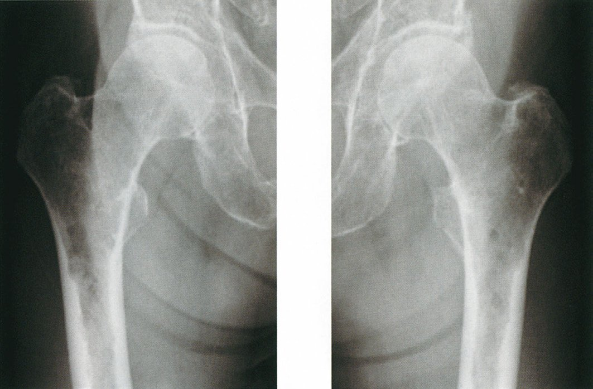
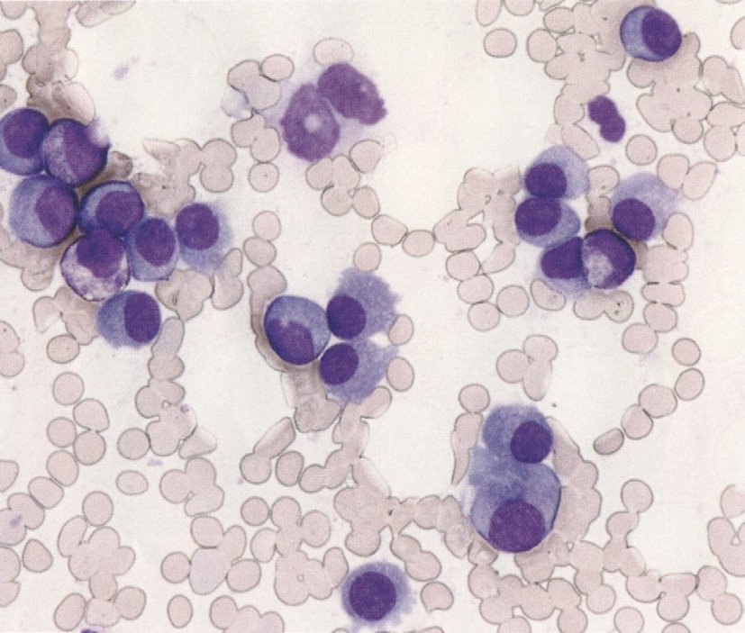
| 治療 | 適否 | 備考 |
|---|---|---|
| デキサメタゾン（a） | ✅ | MMの化学療法レジメンに含まれる |
| 自家末梢血幹細胞移植（b） | ✅ | 65歳以下・PS良好例の強化療法 |
| ビスホスホネート製剤（c） | ✅ | 骨病変予防・高Ca治療 |
| プロテアソーム阻害薬（d） | ✅ | ボルテゾミブ・カルフィルゾミブがMM標準治療 |
| 多発溶骨病変への放射線照射（e） | ❌ 不適切 | 全身・広範囲照射は骨髄抑制→造血能喪失。局所照射（疼痛緩和・脊髄圧迫）は可 |
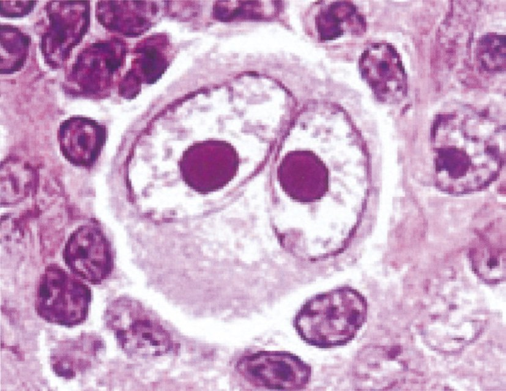
| IPI因子 | 予後不良 | 正常/良好 |
|---|---|---|
| LDH | 高値（ULN超） | 正常 |
| 年齢 | 60歳超 | ≦60歳 |
| 全身PS（ECOG） | 2〜4 | 0〜1 |
| Ann Arbor病期 | III〜IV | I〜II |
| 節外病変数 | 2ヶ所以上 | 0〜1ヶ所 |
| CRP | 含まれない（正解：予後因子でない） | — |
| 選択肢 | ○× | 解説 |
|---|---|---|
| a：無菌室が空くのを待つ | ❌ | 悪性リンパ腫は緊急性→待機は不可 |
| b：精子保存 | ✅ | 化学療法・放射線による精巣機能障害への備え（妊孕性温存） |
| c：看護師同席 | ✅ | チームアプローチ・多職種参加→理解促進・患者支援 |
| d：後方視的臨床研究をもとに計画 | ❌ | 前方視的研究（RCT）に基づくEBM治療が原則 |
| e：父親の病院を紹介 | ❌ | 利益相反・倫理的問題あり→中立的なセカンドオピニオンが必要 |
| B細胞系リンパ腫 | T細胞系リンパ腫 |
|---|---|
| 濾胞性リンパ腫（CD20+・CD10+） | 菌状息肉症 ／Sézary症候群（皮膚T細胞） |
| Burkittリンパ腫（CD20+・CD10+） | ATL（成人T細胞白血病リンパ腫）（CD4+・CD25+） |
| MALTリンパ腫（CD20+） | 末梢性T細胞リンパ腫（PTCL） |
| 有毛細胞白血病（CD11c+・CD103+） | — |
| 項目 | MGUS | MM |
|---|---|---|
| M蛋白 | <3 g/dL | ≥3 g/dL（通常） |
| 骨髄形質細胞 | <10% | ≥10% |
| CRAB症状 | なし | あり（高Ca・腎・貧血・骨） |
| 他のIg（非M蛋白） | 正常（保持） | 低下（正常Ig産生↓） |
| MM移行リスク | 1%/年（長期で約20〜30%） | — |
| 貧血・骨病変 | なし | あり |
| 病期 | 定義 |
|---|---|
| StageⅠ | 1つのリンパ節領域のみ |
| StageⅡ | 横隔膜同側の2つ以上のリンパ節領域 |
| StageⅢ | 横隔膜の両側のリンパ節（横隔膜をまたぐ） |
| StageⅣ | リンパ節外臓器（骨髄・肝・肺等）への浸潤 |
| 選択肢 | ○× | 解説 |
|---|---|---|
| a：凝固異常 | ✅ | 消費性凝固障害（DIC様）→PT/APTT延長・フィブリノゲン↓・FDP↑ |
| b：白血球増多 | ❌ | HPS：マクロファージが白血球も貪食→白血球「減少」 |
| c：LDH低値 | ❌ | HPS：組織破壊→LDH↑（高値） |
| d：血清ビリルビン高値 | ✅ | 肝障害＋溶血（赤血球貪食）→ビリルビン↑ |
| e：血清フェリチン高値 | ✅ | フェリチン著明↑（≥500、重症例では数万以上）はHPS診断基準 |
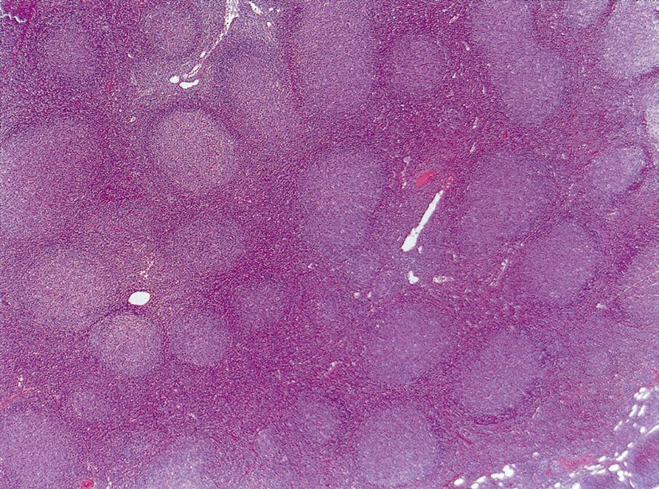
| 選択肢 | ○× | 解説 |
|---|---|---|
| a：加齢とともに発症↑ | ❌ | HLは若年（20〜30代）と高齢（60代）の2峰性分布 |
| b：頸部が好発部位 | ✅ | HLの約70%は頸部リンパ節から発症→連続的に進展 |
| c：持続発熱はB症状 | ✅ | B症状：発熱（>38℃）・寝汗・体重減少（6ヶ月で>10%） |
| d：限局性→化学療法不要 | ❌ | Stage I〜IIでも放射線＋化学療法（ABVD）が標準 |
| e：限局性でも予後不良 | ❌ | 限局性HL（Stage I〜II）は予後良好（5年生存率>90%） |
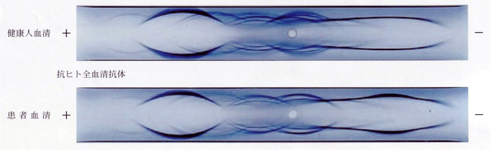
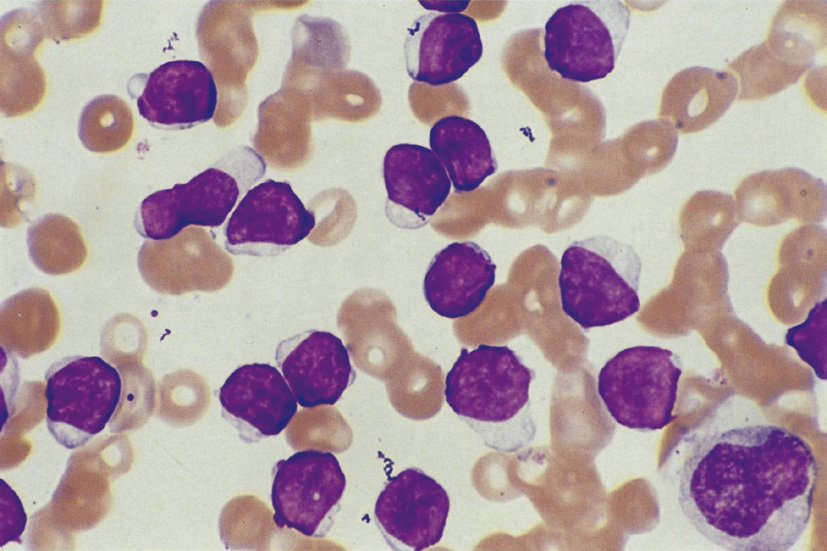
| 所見 | MM | WM |
|---|---|---|
| 貧血 | あり（骨髄浸潤） | あり（骨髄浸潤） |
| 赤血球連銭形成 | あり（M蛋白↑） | あり（IgM↑） |
| M蛋白の型 | IgG・IgA（多い） | IgM（特異的） |
| 骨病変（punched-out） | あり（溶骨性） | なし（WMの特徴的な違い） |
| 眼底静脈ソーセージ様変化 | 稀 | あり（WMに特徴的） |
| 全身リンパ節腫脹 | なし | あり（WMはリンパ形質細胞性リンパ腫） |
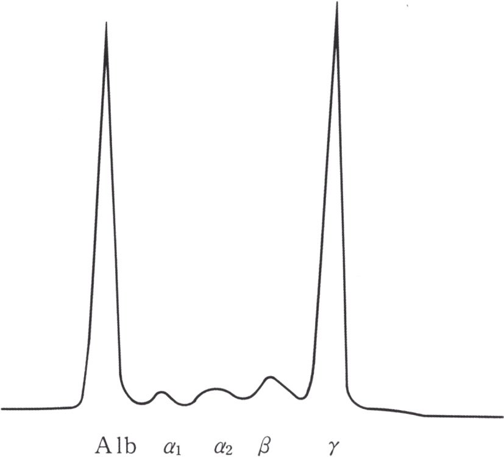
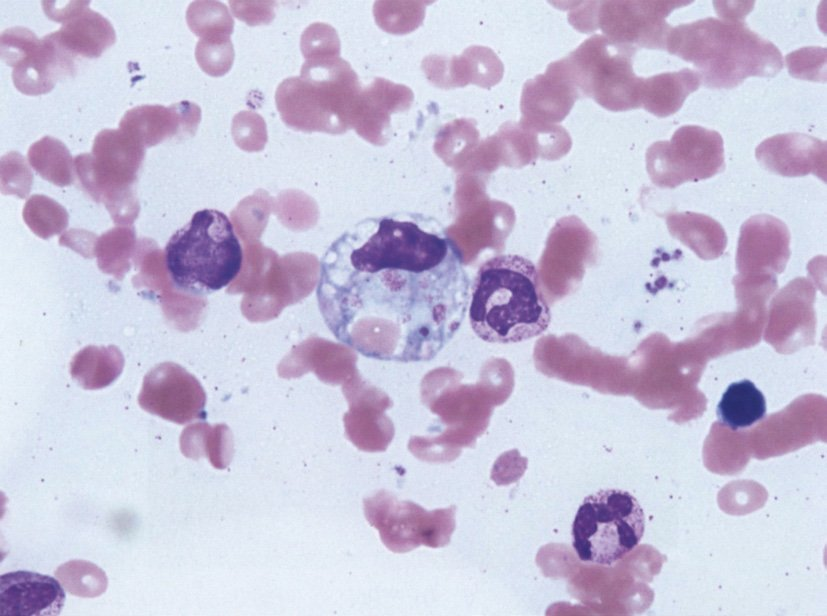
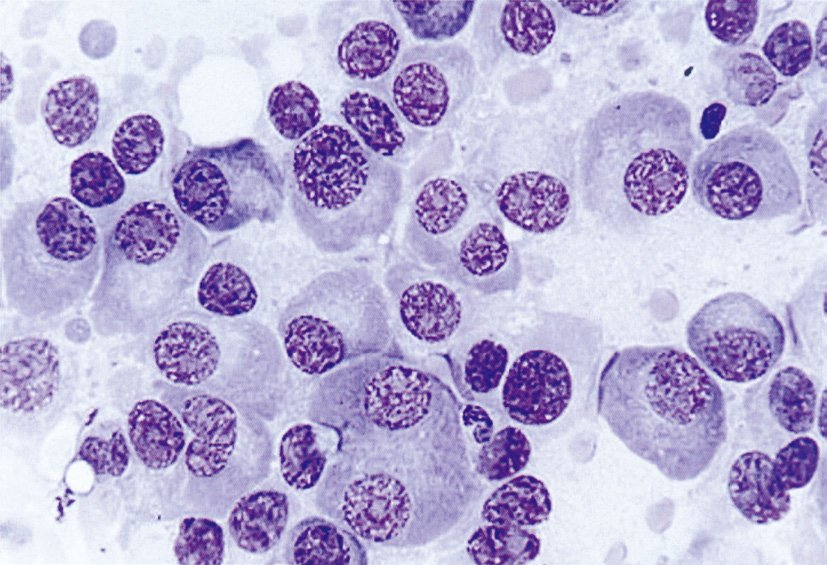
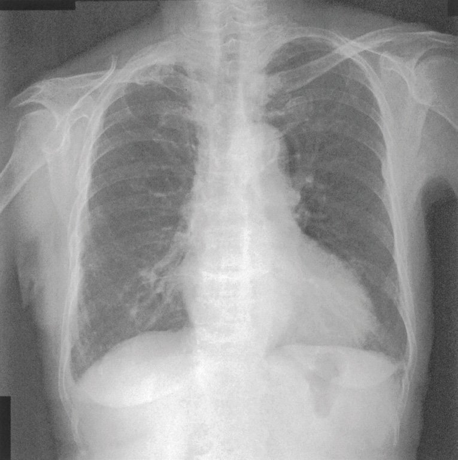
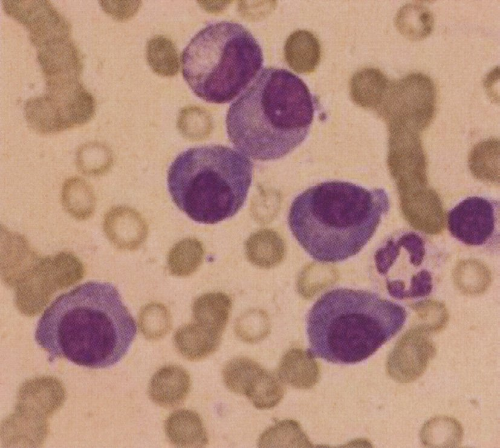
| 検査 | 変化 | 意義 |
|---|---|---|
| 血清M蛋白 | 陽性 | クローン性形質細胞がIgを産生 |
| 血清Ca | ↑（高Ca血症） | 骨溶解→Ca放出 |
| 血清β₂ミクログロブリン（β₂MG） | ↑（予後因子） | 細胞回転↑・腎障害 |
| 寒冷凝集反応 | 通常陰性 | マイコプラズマ・WMの冷式抗体（MMには関係なし） |
| Coombs試験 | 陰性 | AIHA（AIHAはMMでない） |
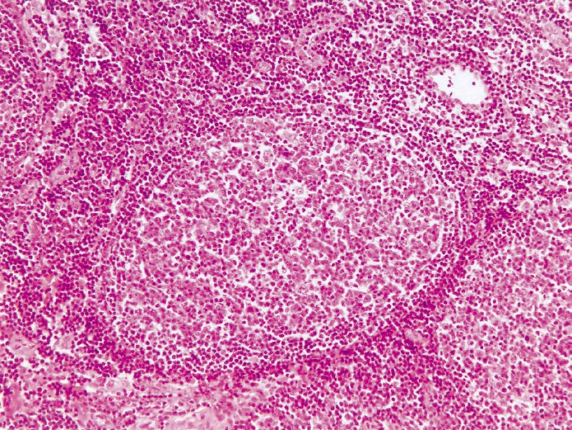
| 疾患 | 圧痛 | 硬さ | 可動性 |
|---|---|---|---|
| 炎症性リンパ節炎 | あり（＋） | 軟〜弾性硬 | あり |
| 悪性リンパ腫 | なし（－） | 弾性硬 | あり（初期） |
| 癌（悪性腫瘍）転移 | なし（－） | 石様硬 | なし（癒着） |
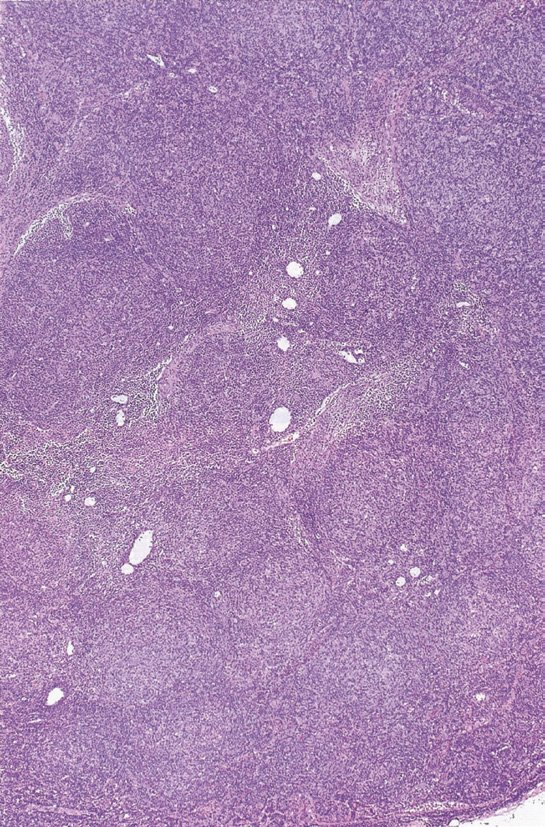
| 選択肢 | ○× | 解説 |
|---|---|---|
| a：血小板数高値 | ❌ | MM：骨髄浸潤→血小板減少（高値にはならない） |
| b：血清Alb高値 | ❌ | MM：正常または低下（Alb産生↓・炎症） |
| c：血清Ca低値 | ❌ | MM：溶骨→高Ca血症（低Ca血症ではない） |
| d：正常Ig低値 | ✅ | 腫瘍形質細胞が正常B細胞・形質細胞を圧排→正常Ig産生↓→低γグロブリン血症 |
| e：BJP尿陽性 | ✅ | 遊離軽鎖（κ/λ）が腎糸球体を通過→尿中に排泄→骨髄腫腎の原因 |
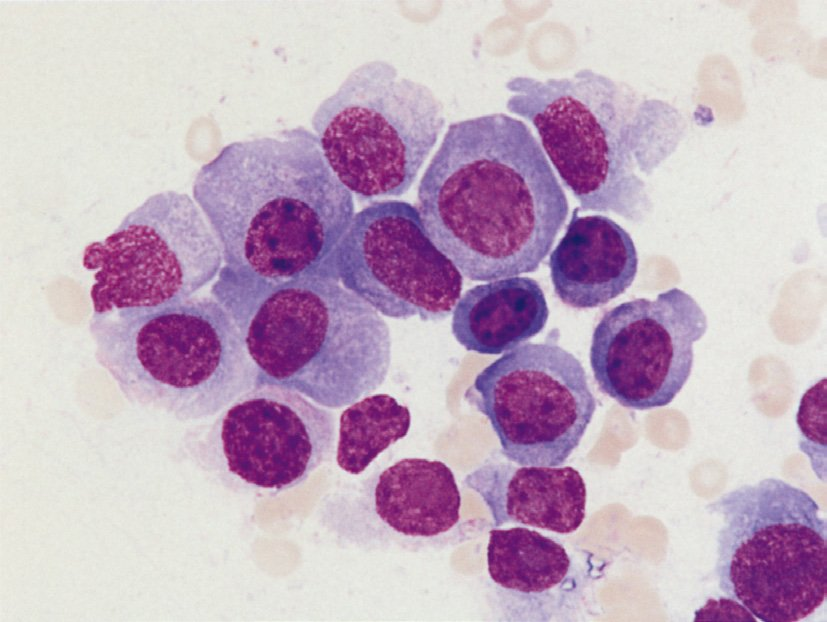
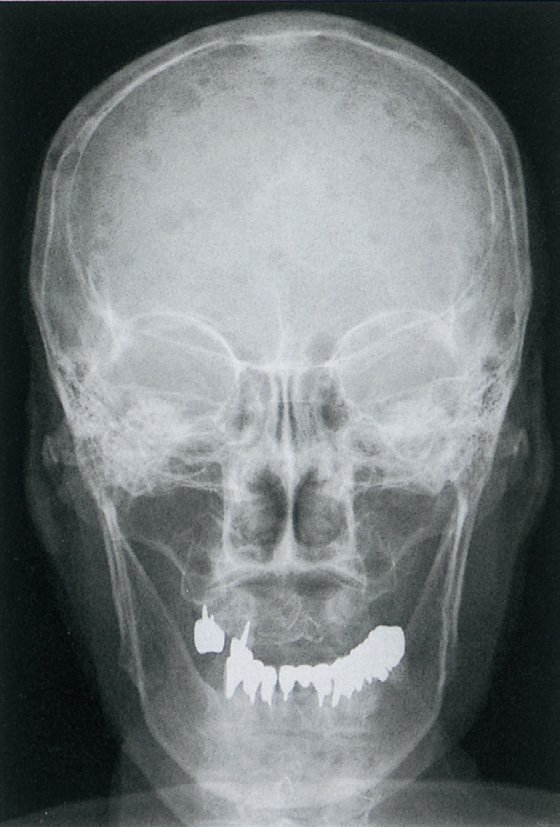
| マーカー | 陽性となる主な腫瘍 |
|---|---|
| CD3・CD4・CD7・CD8 | T細胞系（ATL・菌状息肉症・T-ALL） |
| CD19・CD20 | B細胞系（DLBCL・FL・CLL・Burkitt） |
| CD10（CALLA） | 胚中心由来B細胞リンパ腫（FL・DLBCL GCB型・Burkitt） |
| CD25（IL-2Rα） | ATL・HPS（活性化T細胞） |
| CD30 | HL・ALK陽性大細胞型リンパ腫 |
| CD38・CD138（Syndecan-1） | 形質細胞（MM） |
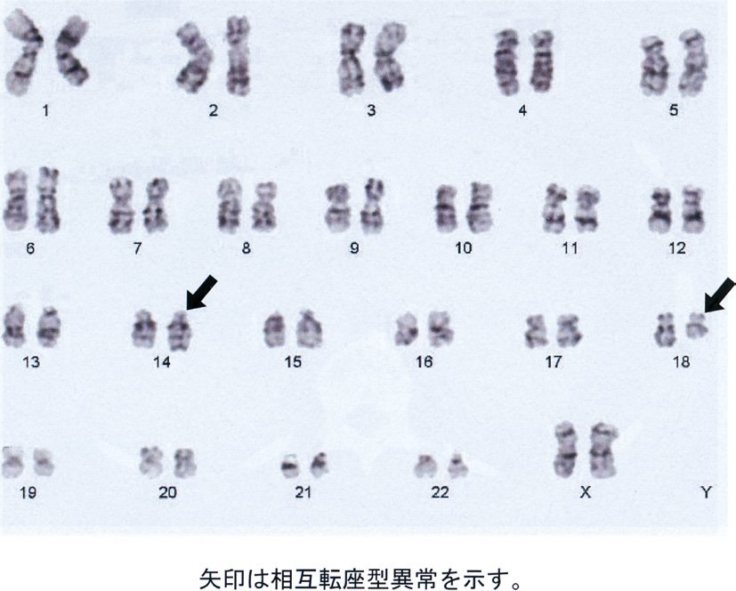
| 合併症 | 機序 |
|---|---|
| 貧血 | 骨髄浸潤→赤血球産生↓ |
| 腎機能障害 | 骨髄腫腎（BJP）・高Ca血症・アミロイド沈着 |
| 低Ca血症 | ❌ → 高Ca血症（溶骨）が正しい |
| アミロイドーシス（AL型） | 遊離軽鎖（L鎖）が臓器に沈着→心・腎・神経障害 |
| DIC | 稀（APLと異なり通常DICは合併しない） |
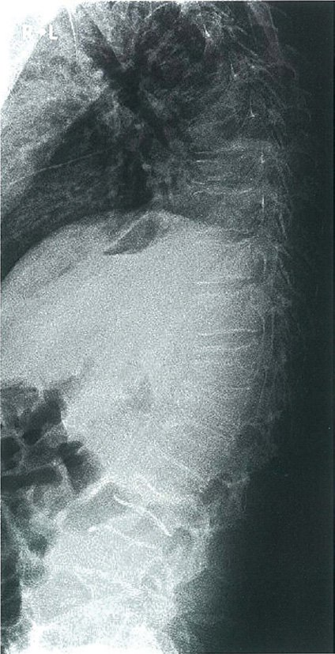
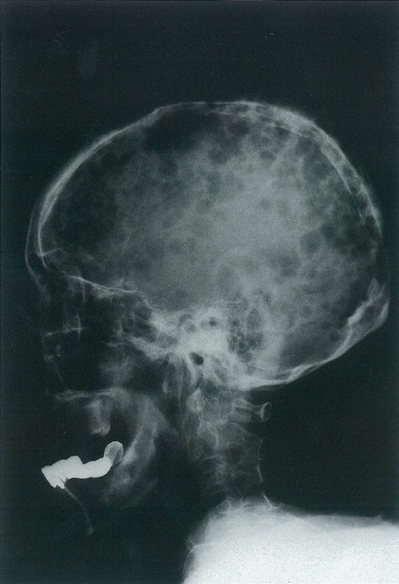
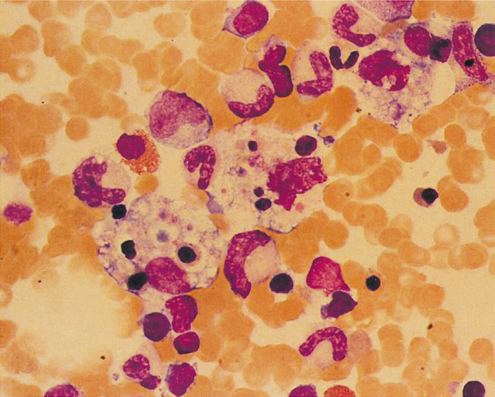
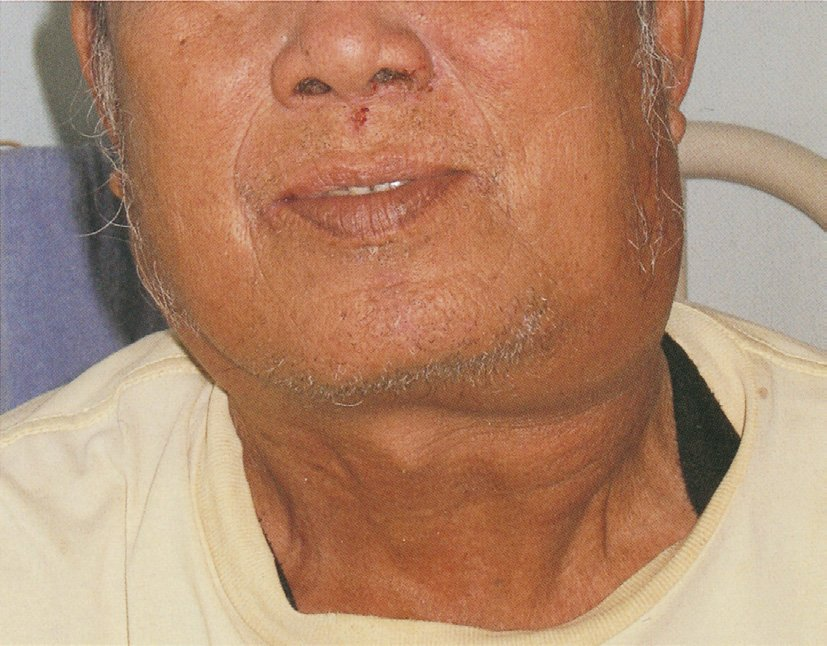
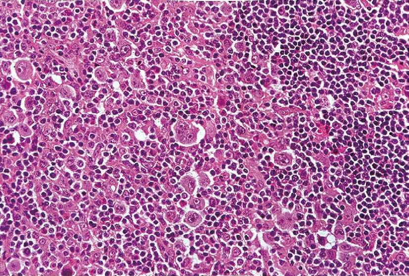